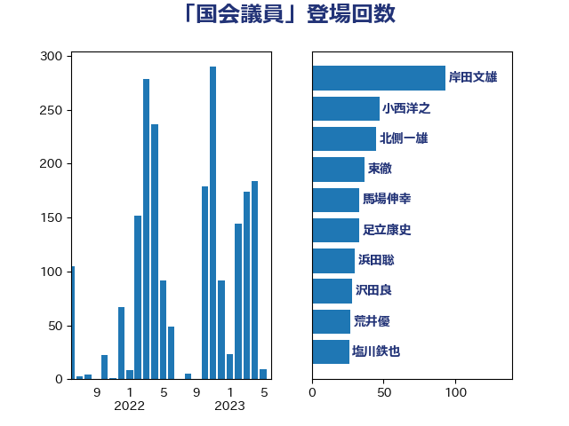

単語「国会議員」

| 岸田文雄 | 自由民主党 | 93 回 |
| 小西洋之 | 立憲民主党 | 47 回 |
| 北側一雄 | 公明党 | 45 回 |
| 東徹 | 日本維新の会 | 37 回 |
| 馬場伸幸 | 日本維新の会 | 33 回 |
| 足立康史 | 日本維新の会 | 33 回 |
| 浜田聡 | NHK党 | 30 回 |
| 沢田良 | 日本維新の会 | 28 回 |
| 荒井優 | 立憲民主党 | 27 回 |
| 塩川鉄也 | 日本共産党 | 26 回 |
| 赤嶺政賢 | 日本共産党 | 25 回 |
| 新藤義孝 | 自由民主党 | 25 回 |
| 吉田はるみ | 立憲民主党 | 25 回 |
| 山口俊一 | 自由民主党 | 22 回 |
| 守島正 | 日本維新の会 | 22 回 |
| 井上哲士 | 日本共産党 | 20 回 |
| 三木圭恵 | 日本維新の会 | 20 回 |
| 野田聖子 | 自由民主党 | 17 回 |
| 寺田稔 | 自由民主党 | 17 回 |
| 北神圭朗 | 無所属 | 17 回 |
| 鈴木宗男 | 日本維新の会 | 16 回 |
| 福島伸享 | 無所属 | 16 回 |
| 玉木雄一郎 | 国民民主党 | 16 回 |
| 藤岡隆雄 | 立憲民主党 | 15 回 |
| 福島みずほ | 社会民主党 | 15 回 |
| 池下卓 | 日本維新の会 | 15 回 |
| 落合貴之 | 立憲民主党 | 14 回 |
| 篠原孝 | 立憲民主党 | 14 回 |
| 斎藤アレックス | 国民民主党 | 14 回 |
| 新垣邦男 | 立憲民主党 | 13 回 |
| 太栄志 | 立憲民主党 | 13 回 |
| 吉田宣弘 | 公明党 | 13 回 |
| 前川清成 | 日本維新の会 | 13 回 |
| 細田博之 | 自由民主党 | 12 回 |
| 松本剛明 | 自由民主党 | 12 回 |
| 山田勝彦 | 立憲民主党 | 12 回 |
| 塩村あやか | 立憲民主党 | 12 回 |
| 伊藤岳 | 日本共産党 | 12 回 |
| 齋藤健 | 自由民主党 | 11 回 |
| 石川大我 | 立憲民主党 | 11 回 |
| 山際大志郎 | 自由民主党 | 11 回 |
| 宮本岳志 | 日本共産党 | 11 回 |
| 音喜多駿 | 日本維新の会 | 10 回 |
| 阿部司 | 日本維新の会 | 10 回 |
| 臼井正一 | 自由民主党 | 10 回 |
| 柴田巧 | 日本維新の会 | 10 回 |
| 山井和則 | 立憲民主党 | 10 回 |
| 青山繁晴 | 自由民主党 | 9 回 |
| 青山大人 | 立憲民主党 | 9 回 |
| 長妻昭 | 立憲民主党 | 9 回 |
| 金子恭之 | 自由民主党 | 9 回 |
| 葉梨康弘 | 自由民主党 | 9 回 |
| 福岡資麿 | 自由民主党 | 9 回 |
| 清水貴之 | 日本維新の会 | 9 回 |
| 浜地雅一 | 公明党 | 9 回 |
| 林芳正 | 自由民主党 | 9 回 |
| 杉本和巳 | 日本維新の会 | 9 回 |
| 小野泰輔 | 日本維新の会 | 9 回 |
| 大島敦 | 立憲民主党 | 9 回 |
| 階猛 | 立憲民主党 | 8 回 |
| 西村明宏 | 自由民主党 | 8 回 |
| 舞立昇治 | 自由民主党 | 8 回 |
| 米山隆一 | 立憲民主党 | 8 回 |
| 片山大介 | 日本維新の会 | 8 回 |
| 浅野哲 | 国民民主党 | 8 回 |
| 山本剛正 | 日本維新の会 | 8 回 |
| 尾辻秀久 | 無所属 | 8 回 |
| 小倉將信 | 自由民主党 | 8 回 |
| 務台俊介 | 自由民主党 | 8 回 |
| 青柳仁士 | 日本維新の会 | 7 回 |
| 舩後靖彦 | れいわ新選組 | 7 回 |
| 浜田靖一 | 自由民主党 | 7 回 |
| 泉健太 | 立憲民主党 | 7 回 |
| 櫻井周 | 立憲民主党 | 7 回 |
| 杉尾秀哉 | 立憲民主党 | 7 回 |
| 本村伸子 | 日本共産党 | 7 回 |
| 打越さく良 | 立憲民主党 | 7 回 |
| 川田龍平 | 立憲民主党 | 7 回 |
| 山添拓 | 日本共産党 | 7 回 |
| 山東昭子 | 自由民主党 | 7 回 |
| 山本太郎 | れいわ新選組 | 7 回 |
| 天畠大輔 | れいわ新選組 | 7 回 |
| 城井崇 | 立憲民主党 | 7 回 |
| 井坂信彦 | 立憲民主党 | 7 回 |
| 高木かおり | 日本維新の会 | 6 回 |
| 野田国義 | 立憲民主党 | 6 回 |
| 谷田川元 | 立憲民主党 | 6 回 |
| 田村貴昭 | 日本共産党 | 6 回 |
| 浅川義治 | 日本維新の会 | 6 回 |
| 岡本あき子 | 立憲民主党 | 6 回 |
| 山谷えり子 | 自由民主党 | 6 回 |
| 堀場幸子 | 日本維新の会 | 6 回 |
| 鈴木敦 | 国民民主党 | 5 回 |
| 近藤和也 | 立憲民主党 | 5 回 |
| 石井苗子 | 日本維新の会 | 5 回 |
| 田村まみ | 国民民主党 | 5 回 |
| 田島麻衣子 | 立憲民主党 | 5 回 |
| 猪瀬直樹 | 日本維新の会 | 5 回 |
| 池畑浩太朗 | 日本維新の会 | 5 回 |
| 櫻井充 | 自由民主党 | 5 回 |
| 横山信一 | 公明党 | 5 回 |
| 榛葉賀津也 | 国民民主党 | 5 回 |
| 柳ヶ瀬裕文 | 日本維新の会 | 5 回 |
| 松野博一 | 自由民主党 | 5 回 |
| 松下新平 | 自由民主党 | 5 回 |
| 斉藤鉄夫 | 公明党 | 5 回 |
| 岩谷良平 | 日本維新の会 | 5 回 |
| 山口那津男 | 公明党 | 5 回 |
| 山下芳生 | 日本共産党 | 5 回 |
| 小池晃 | 日本共産党 | 5 回 |
| 宮本徹 | 日本共産党 | 5 回 |
| 奥野総一郎 | 立憲民主党 | 5 回 |
| 和田有一朗 | 日本維新の会 | 5 回 |
| 吉良州司 | 無所属 | 5 回 |
| 串田誠一 | 日本維新の会 | 5 回 |
| 高良鉄美 | 無所属 | 4 回 |
| 野村哲郎 | 自由民主党 | 4 回 |
| 重徳和彦 | 立憲民主党 | 4 回 |
| 西村智奈美 | 立憲民主党 | 4 回 |
| 西村康稔 | 自由民主党 | 4 回 |
| 萩生田光一 | 自由民主党 | 4 回 |
| 船田元 | 自由民主党 | 4 回 |
| 福山哲郎 | 立憲民主党 | 4 回 |
| 牧野たかお | 自由民主党 | 4 回 |
| 渡辺創 | 立憲民主党 | 4 回 |
| 森山浩行 | 立憲民主党 | 4 回 |
| 柴山昌彦 | 自由民主党 | 4 回 |
| 柚木道義 | 立憲民主党 | 4 回 |
| 本庄知史 | 立憲民主党 | 4 回 |
| 早坂敦 | 日本維新の会 | 4 回 |
| 志位和夫 | 日本共産党 | 4 回 |
| 徳永久志 | 立憲民主党 | 4 回 |
| 平林晃 | 公明党 | 4 回 |
| 山岸一生 | 立憲民主党 | 4 回 |
| 山下貴司 | 自由民主党 | 4 回 |
| 小沢雅仁 | 立憲民主党 | 4 回 |
| 小宮山泰子 | 立憲民主党 | 4 回 |
| 宮崎政久 | 自由民主党 | 4 回 |
| 大石あきこ | れいわ新選組 | 4 回 |
| 嘉田由紀子 | 無所属 | 4 回 |
| 古賀之士 | 立憲民主党 | 4 回 |
| 加藤勝信 | 自由民主党 | 4 回 |
| 中川正春 | 立憲民主党 | 4 回 |
| 三反園訓 | 無所属 | 4 回 |
| 高橋千鶴子 | 日本共産党 | 3 回 |
| 馬場雄基 | 立憲民主党 | 3 回 |
| 須藤元気 | 無所属 | 3 回 |
| 阿部弘樹 | 日本維新の会 | 3 回 |
| 金田勝年 | 自由民主党 | 3 回 |
| 金村龍那 | 日本維新の会 | 3 回 |
| 西銘恒三郎 | 自由民主党 | 3 回 |
| 西岡秀子 | 国民民主党 | 3 回 |
| 藤井比早之 | 自由民主党 | 3 回 |
| 菊田真紀子 | 立憲民主党 | 3 回 |
| 芳賀道也 | 国民民主党 | 3 回 |
| 自見はなこ | 自由民主党 | 3 回 |
| 美延映夫 | 日本維新の会 | 3 回 |
| 細野豪志 | 自由民主党 | 3 回 |
| 紙智子 | 日本共産党 | 3 回 |
| 笠井亮 | 日本共産党 | 3 回 |
| 石井章 | 日本維新の会 | 3 回 |
| 石井準一 | 自由民主党 | 3 回 |
| 牧原秀樹 | 自由民主党 | 3 回 |
| 熊谷裕人 | 立憲民主党 | 3 回 |
| 滝波宏文 | 自由民主党 | 3 回 |
| 源馬謙太郎 | 立憲民主党 | 3 回 |
| 河西宏一 | 公明党 | 3 回 |
| 永岡桂子 | 自由民主党 | 3 回 |
| 森本真治 | 立憲民主党 | 3 回 |
| 森屋隆 | 立憲民主党 | 3 回 |
| 梅村聡 | 日本維新の会 | 3 回 |
| 杉田水脈 | 自由民主党 | 3 回 |
| 末次精一 | 立憲民主党 | 3 回 |
| 徳永エリ | 立憲民主党 | 3 回 |
| 後藤祐一 | 立憲民主党 | 3 回 |
| 平木大作 | 公明党 | 3 回 |
| 寺田静 | 無所属 | 3 回 |
| 寺田学 | 立憲民主党 | 3 回 |
| 宮口治子 | 立憲民主党 | 3 回 |
| 大塚耕平 | 国民民主党 | 3 回 |
| 塩崎彰久 | 自由民主党 | 3 回 |
| 吉良よし子 | 日本共産党 | 3 回 |
| 前原誠司 | 国民民主党 | 3 回 |
| 住吉寛紀 | 日本維新の会 | 3 回 |
| 中司宏 | 日本維新の会 | 3 回 |
| 上田清司 | 国民民主党 | 3 回 |
| 高市早苗 | 自由民主党 | 2 回 |
| 青木愛 | 立憲民主党 | 2 回 |
| 青島健太 | 日本維新の会 | 2 回 |
| 関口昌一 | 自由民主党 | 2 回 |
| 長谷川淳二 | 自由民主党 | 2 回 |
| 長浜博行 | 無所属 | 2 回 |
| 長友慎治 | 国民民主党 | 2 回 |
| 鎌田さゆり | 立憲民主党 | 2 回 |
| 鈴木俊一 | 自由民主党 | 2 回 |
| 野田佳彦 | 立憲民主党 | 2 回 |
| 進藤金日子 | 自由民主党 | 2 回 |
| 赤羽一嘉 | 公明党 | 2 回 |
| 豊田俊郎 | 自由民主党 | 2 回 |
| 谷合正明 | 公明党 | 2 回 |
| 西野太亮 | 自由民主党 | 2 回 |
| 藤田文武 | 日本維新の会 | 2 回 |
| 茂木敏充 | 自由民主党 | 2 回 |
| 簗和生 | 自由民主党 | 2 回 |
| 空本誠喜 | 日本維新の会 | 2 回 |
| 穂坂泰 | 自由民主党 | 2 回 |
| 神谷宗幣 | 参政党 | 2 回 |
| 石垣のりこ | 立憲民主党 | 2 回 |
| 石井啓一 | 公明党 | 2 回 |
| 田野瀬太道 | 無所属 | 2 回 |
| 田村智子 | 日本共産党 | 2 回 |
| 玄葉光一郎 | 立憲民主党 | 2 回 |
| 浦野靖人 | 日本維新の会 | 2 回 |
| 浅田均 | 日本維新の会 | 2 回 |
| 津島淳 | 自由民主党 | 2 回 |
| 池田佳隆 | 自由民主党 | 2 回 |
| 江藤拓 | 自由民主党 | 2 回 |
| 櫻田義孝 | 自由民主党 | 2 回 |
| 梅村みずほ | 日本維新の会 | 2 回 |
| 松沢成文 | 日本維新の会 | 2 回 |
| 松本尚 | 自由民主党 | 2 回 |
| 松原仁 | 立憲民主党 | 2 回 |
| 末松信介 | 自由民主党 | 2 回 |
| 平沼正二郎 | 自由民主党 | 2 回 |
| 岬麻紀 | 日本維新の会 | 2 回 |
| 岡田直樹 | 自由民主党 | 2 回 |
| 山田賢司 | 自由民主党 | 2 回 |
| 山田太郎 | 自由民主党 | 2 回 |
| 山口壯 | 自由民主党 | 2 回 |
| 宮路拓馬 | 自由民主党 | 2 回 |
| 宮崎勝 | 公明党 | 2 回 |
| 堀井巌 | 自由民主党 | 2 回 |
| 國場幸之助 | 自由民主党 | 2 回 |
| 吉田豊史 | 無所属 | 2 回 |
| 吉田統彦 | 立憲民主党 | 2 回 |
| 吉川沙織 | 立憲民主党 | 2 回 |
| 古川元久 | 国民民主党 | 2 回 |
| 古屋圭司 | 自由民主党 | 2 回 |
| 勝部賢志 | 立憲民主党 | 2 回 |
| 倉林明子 | 日本共産党 | 2 回 |
| 伊波洋一 | 無所属 | 2 回 |
| 五十嵐清 | 自由民主党 | 2 回 |
| 丸川珠代 | 自由民主党 | 2 回 |
| 鬼木誠 | 立憲民主党 | 1 回 |
| 高野光二郎 | 自由民主党 | 1 回 |
| 高橋克法 | 自由民主党 | 1 回 |
| 高橋光男 | 公明党 | 1 回 |
| 高木陽介 | 公明党 | 1 回 |
| 鈴木義弘 | 国民民主党 | 1 回 |
| 金子恵美 | 立憲民主党 | 1 回 |
| 野間健 | 立憲民主党 | 1 回 |
| 道下大樹 | 立憲民主党 | 1 回 |
| 逢坂誠二 | 立憲民主党 | 1 回 |
| 近藤昭一 | 立憲民主党 | 1 回 |
| 越智俊之 | 自由民主党 | 1 回 |
| 赤池誠章 | 自由民主党 | 1 回 |
| 赤木正幸 | 日本維新の会 | 1 回 |
| 西田昌司 | 自由民主党 | 1 回 |
| 西田実仁 | 公明党 | 1 回 |
| 藤木眞也 | 自由民主党 | 1 回 |
| 藤巻健太 | 日本維新の会 | 1 回 |
| 菅直人 | 立憲民主党 | 1 回 |
| 若林洋平 | 自由民主党 | 1 回 |
| 舟山康江 | 国民民主党 | 1 回 |
| 羽田次郎 | 立憲民主党 | 1 回 |
| 緒方林太郎 | 無所属 | 1 回 |
| 笠浩史 | 無所属 | 1 回 |
| 竹詰仁 | 国民民主党 | 1 回 |
| 竹内真二 | 公明党 | 1 回 |
| 窪田哲也 | 公明党 | 1 回 |
| 稲田朋美 | 自由民主党 | 1 回 |
| 稲富修二 | 立憲民主党 | 1 回 |
| 秋葉賢也 | 自由民主党 | 1 回 |
| 秋本真利 | 自由民主党 | 1 回 |
| 福田昭夫 | 立憲民主党 | 1 回 |
| 神田潤一 | 自由民主党 | 1 回 |
| 石田昌宏 | 自由民主党 | 1 回 |
| 石橋林太郎 | 自由民主党 | 1 回 |
| 石原正敬 | 自由民主党 | 1 回 |
| 石原宏高 | 自由民主党 | 1 回 |
| 畦元将吾 | 自由民主党 | 1 回 |
| 田村憲久 | 自由民主党 | 1 回 |
| 田名部匡代 | 立憲民主党 | 1 回 |
| 牧島かれん | 自由民主党 | 1 回 |
| 牧山ひろえ | 立憲民主党 | 1 回 |
| 渡辺孝一 | 自由民主党 | 1 回 |
| 浮島智子 | 公明党 | 1 回 |
| 河野太郎 | 自由民主党 | 1 回 |
| 永井学 | 自由民主党 | 1 回 |
| 水岡俊一 | 立憲民主党 | 1 回 |
| 櫛渕万里 | れいわ新選組 | 1 回 |
| 森田俊和 | 立憲民主党 | 1 回 |
| 森屋宏 | 自由民主党 | 1 回 |
| 梅谷守 | 立憲民主党 | 1 回 |
| 柳本顕 | 自由民主党 | 1 回 |
| 松山政司 | 自由民主党 | 1 回 |
| 有村治子 | 自由民主党 | 1 回 |
| 早稲田ゆき | 立憲民主党 | 1 回 |
| 斎藤嘉隆 | 立憲民主党 | 1 回 |
| 掘井健智 | 日本維新の会 | 1 回 |
| 平将明 | 自由民主党 | 1 回 |
| 工藤彰三 | 自由民主党 | 1 回 |
| 岩田和親 | 自由民主党 | 1 回 |
| 岩渕友 | 日本共産党 | 1 回 |
| 岡田克也 | 立憲民主党 | 1 回 |
| 山田美樹 | 自由民主党 | 1 回 |
| 山崎正恭 | 公明党 | 1 回 |
| 山口晋 | 自由民主党 | 1 回 |
| 山下雄平 | 自由民主党 | 1 回 |
| 小田原潔 | 自由民主党 | 1 回 |
| 小熊慎司 | 立憲民主党 | 1 回 |
| 小沼巧 | 立憲民主党 | 1 回 |
| 小森卓郎 | 自由民主党 | 1 回 |
| 小林茂樹 | 自由民主党 | 1 回 |
| 小林一大 | 自由民主党 | 1 回 |
| 小山展弘 | 立憲民主党 | 1 回 |
| 室井邦彦 | 日本維新の会 | 1 回 |
| 奥下剛光 | 日本維新の会 | 1 回 |
| 太田房江 | 自由民主党 | 1 回 |
| 大西健介 | 立憲民主党 | 1 回 |
| 大口善徳 | 公明党 | 1 回 |
| 大串正樹 | 自由民主党 | 1 回 |
| 堤かなめ | 立憲民主党 | 1 回 |
| 堀井学 | 自由民主党 | 1 回 |
| 土田慎 | 自由民主党 | 1 回 |
| 國重徹 | 公明党 | 1 回 |
| 国定勇人 | 自由民主党 | 1 回 |
| 和田義明 | 自由民主党 | 1 回 |
| 和田政宗 | 自由民主党 | 1 回 |
| 吉田とも代 | 日本維新の会 | 1 回 |
| 吉川赳 | 無所属 | 1 回 |
| 吉川元 | 立憲民主党 | 1 回 |
| 吉井章 | 自由民主党 | 1 回 |
| 古川直季 | 自由民主党 | 1 回 |
| 古川康 | 自由民主党 | 1 回 |
| 古屋範子 | 公明党 | 1 回 |
| 加藤明良 | 自由民主党 | 1 回 |
| 保岡宏武 | 自由民主党 | 1 回 |
| 佐藤英道 | 公明党 | 1 回 |
| 佐々木紀 | 自由民主党 | 1 回 |
| 伴野豊 | 立憲民主党 | 1 回 |
| 伊藤孝恵 | 国民民主党 | 1 回 |
| 伊東信久 | 日本維新の会 | 1 回 |
| 今井絵理子 | 自由民主党 | 1 回 |
| 仁木博文 | 無所属 | 1 回 |
| 井出庸生 | 自由民主党 | 1 回 |
| 中野洋昌 | 公明党 | 1 回 |
| 中谷一馬 | 立憲民主党 | 1 回 |
| 中島克仁 | 立憲民主党 | 1 回 |
| 下条みつ | 立憲民主党 | 1 回 |
| 上野通子 | 自由民主党 | 1 回 |
| 上杉謙太郎 | 自由民主党 | 1 回 |
| 上月良祐 | 自由民主党 | 1 回 |
| 上川陽子 | 自由民主党 | 1 回 |
| 一谷勇一郎 | 日本維新の会 | 1 回 |